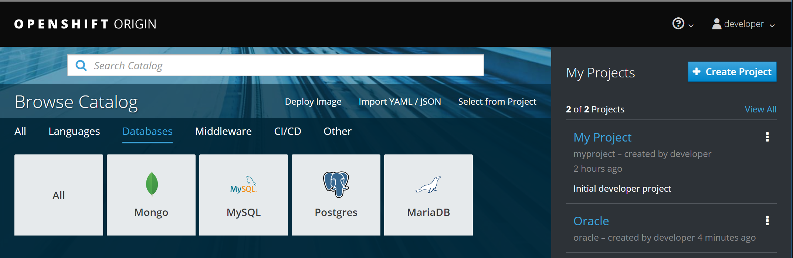
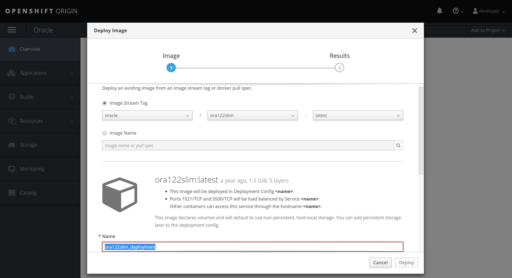
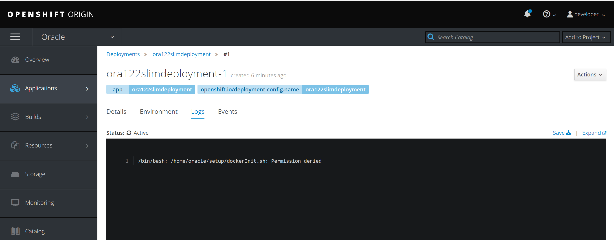
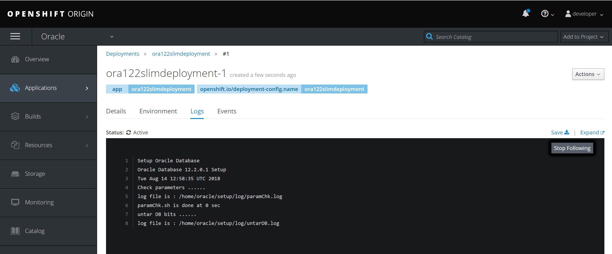

This was first published on https://www.dbi-services.com/blog/oracle-database-on-openshift/ (2018-08-14)
Republishing here for new followers. The content is related to the versions available at the publication date.
.
In a previous post I described the setup of MiniShift on my laptop in order to run OpenShift for test purpose. I even pulled the Oracle Database image from the Docker Store. But the goal is to import it into OpenShift to deploy it from the Image Stream.
I start MiniShift on my laptop, specifying a larger disk (default is 20GB)
C:\Users\Franck>minishift start --disk-size 40g
-- Starting profile 'minishift'
-- Check if deprecated options are used ... OK
-- Checking if https://github.com is reachable ... OK
-- Checking if requested OpenShift version 'v3.9.0' is valid ... OK
-- Checking if requested OpenShift version 'v3.9.0' is supported ... OK
-- Checking if requested hypervisor 'virtualbox' is supported on this platform ... OK
-- Checking if VirtualBox is installed ... OK
-- Checking the ISO URL ... OK
-- Checking if provided oc flags are supported ... OK
-- Starting the OpenShift cluster using 'virtualbox' hypervisor ...
-- Minishift VM will be configured with ...
Memory: 2 GB
vCPUs : 2
Disk size: 40 GB
-- Starting Minishift VM .................................................................... OK
-- Checking for IP address ... OK
-- Checking for nameservers ... OK
-- Checking if external host is reachable from the Minishift VM ...
Pinging 8.8.8.8 ... OK
-- Checking HTTP connectivity from the VM ...
Retrieving http://minishift.io/index.html ... OK
-- Checking if persistent storage volume is mounted ... OK
-- Checking available disk space ... 1% used OK
Importing 'openshift/origin:v3.9.0' ............. OK
Importing 'openshift/origin-docker-registry:v3.9.0' ... OK
Importing 'openshift/origin-haproxy-router:v3.9.0' ...... OK
-- OpenShift cluster will be configured with ...
Version: v3.9.0
-- Copying oc binary from the OpenShift container image to VM ... OK
-- Starting OpenShift cluster ...........................................................
Using nsenter mounter for OpenShift volumes
Using public hostname IP 192.168.99.105 as the host IP
Using 192.168.99.105 as the server IP
Starting OpenShift using openshift/origin:v3.9.0 ...
OpenShift server started.
The server is accessible via web console at:
https:⁄⁄192.168.99.105:8443
You are logged in as:
User: developer
Password:
To login as administrator:
oc login -u system:admin
MiniShift is starting a VirualBox and gets an IP address from the VirtualBox DHCP – here 192.168.99.105
I can access to the console https://192.168.99.105:8443 and log as developer or admin but for the moment I’m continuing in command line.
At any moment I can log to the VM running OpenShift with the minishift command. Here checking the size of the disks
C:\Users\Franck>minishift ssh
[docker@minishift ~]$ df -h
Filesystem Size Used Avail Use% Mounted on
/dev/mapper/live-rw 9.8G 697M 9.0G 8% /
devtmpfs 974M 0 974M 0% /dev
tmpfs 1000M 0 1000M 0% /dev/shm
tmpfs 1000M 18M 983M 2% /run
tmpfs 1000M 0 1000M 0% /sys/fs/cgroup
/dev/sr0 344M 344M 0 100% /run/initramfs/live
/dev/sda1 39G 1.8G 37G 5% /mnt/sda1
tmpfs 200M 0 200M 0% /run/user/0
tmpfs 200M 0 200M 0% /run/user/1000
The goal is to run in OpenShift a container from an image that has been build somewhere else. In this example I’ll not build one but use one provided on the Docker store: the Oracle Database ‘slim’ image. For this example, I’ll use the minishift VM docker, just because it is there.
I have DockerTools installed on my laptop and just want to set the environment to connect to the docker server on the minishift VM. I can get the environment from minishift:
C:\Users\Franck>minishift docker-env
SET DOCKER_TLS_VERIFY=1
SET DOCKER_HOST=tcp://192.168.99.105:2376
SET DOCKER_CERT_PATH=C:\Users\Franck\.minishift\certs
REM Run this command to configure your shell:
REM @FOR /f "tokens=*" %i IN ('minishift docker-env') DO @call %i
Here is how to directly set the environemnt from it:
C:\Users\Franck>@FOR /f "tokens=*" %i IN ('minishift docker-env') DO @call %i
Now my docker commands will connect to this docker server. Here are the related info, minishift is already running several containers there for its own usage:
C:\Users\Franck>docker info
Containers: 9
Running: 7
Paused: 0
Stopped: 2
Images: 6
Server Version: 1.13.1
Storage Driver: overlay2
Backing Filesystem: xfs
Supports d_type: true
Native Overlay Diff: true
Logging Driver: journald
Cgroup Driver: systemd
Plugins:
Volume: local
Network: bridge host macvlan null overlay
Log:
Swarm: inactive
Runtimes: docker-runc runc
Default Runtime: docker-runc
Init Binary: docker-init
containerd version: (expected: aa8187dbd3b7ad67d8e5e3a15115d3eef43a7ed1)
runc version: e9c345b3f906d5dc5e8100b05ce37073a811c74a (expected: 9df8b306d01f59d3a8029be411de015b7304dd8f)
init version: N/A (expected: 949e6facb77383876aeff8a6944dde66b3089574)
Security Options:
seccomp
Profile: default
selinux
Kernel Version: 3.10.0-862.6.3.el7.x86_64
Operating System: CentOS Linux 7 (Core)
OSType: linux
Architecture: x86_64
CPUs: 2
Total Memory: 1.953GiB
Name: minishift
ID: U7IQ:TE3X:HSGK:3ES2:IO6G:A7VI:3KUU:YMBC:3ZIR:QYUL:EQUL:VFMS
Docker Root Dir: /var/lib/docker
Debug Mode (client): false
Debug Mode (server): false
Username: pachot
Registry: https://index.docker.io/v1/
Labels:
provider=virtualbox
Experimental: false
Insecure Registries:
172.30.0.0/16
127.0.0.0/8
Live Restore Enabled: false
As for this example, I’ll use the Oracle Database image, I need to log to the Docker Store to prove that I accept the licensing conditions:
C:\Users\Franck>docker login
Login with your Docker ID to push and pull images from Docker Hub. If you don't have a Docker ID, head over to https://hub.docker.com to create one.
Username:
Password:
Login Succeeded
I pull the image, takes some time because ‘slim’ means 2GB with Oracle Database.
C:\Users\Franck>docker pull store/oracle/database-enterprise:12.2.0.1-slim
Trying to pull repository docker.io/store/oracle/database-enterprise ...
12.2.0.1-slim: Pulling from docker.io/store/oracle/database-enterprise
4ce27fe12c04: Pull complete
9d3556e8e792: Pull complete
fc60a1a28025: Pull complete
0c32e4ed872e: Pull complete
be0a1f1e8dfd: Pull complete
Digest: sha256:dbd87ae4cc3425dea7ba3d3f34e062cbd0afa89aed2c3f3d47ceb5213cc0359a
Status: Downloaded newer image for docker.io/store/oracle/database-enterprise:12.2.0.1-slim
Here is the image:
C:\Users\Franck>docker images
REPOSITORY TAG IMAGE ID CREATED SIZE
openshift/origin-web-console v3.9.0 aa12a2fc57f7 7 weeks ago 495MB
openshift/origin-docker-registry v3.9.0 0530b896b578 7 weeks ago 465MB
openshift/origin-haproxy-router v3.9.0 6b85d7aec983 7 weeks ago 1.28GB
openshift/origin-deployer v3.9.0 39ee47797d2e 7 weeks ago 1.26GB
openshift/origin v3.9.0 12a3f005312b 7 weeks ago 1.26GB
openshift/origin-pod v3.9.0 6e08365fbba9 7 weeks ago 223MB
store/oracle/database-enterprise 12.2.0.1-slim 27c9559d36ec 12 months ago 2.08GB
My minishift VM disk has increased by 2GB:
C:\Users\Franck>minishift ssh -- df -Th /mnt/sda1
Filesystem Type Size Used Avail Use% Mounted on
/dev/sda1 xfs 39G 3.9G 35G 11% /mnt/sda1
OpenShift has its integrated container registry from which the Docker images are visible to Image Stream.
Here is the address of the registry:
C:\Users\Franck>minishift openshift registry
172.30.1.1:5000
I’ll run some OpenShift commands and the path to the minishift cache for ‘oc’ can be set with:
C:\Users\Franck>minishift oc-env
SET PATH=C:\Users\Franck\.minishift\cache\oc\v3.9.0\windows;%PATH%
REM Run this command to configure your shell:
REM @FOR /f "tokens=*" %i IN ('minishift oc-env') DO @call %i
C:\Users\Franck>@FOR /f "tokens=*" %i IN ('minishift oc-env') DO @call %i
I am still connected as developer to OpenShift:
C:\Users\Franck>oc whoami
developer
and I get the login token:
C:\Users\Franck>oc whoami -t
lde5zRPHjkDyaXU9ninZ6zX50cVu3liNBjQVinJdwFc
I use this token to login to the OpenShift registry with docker in order to be able to push the image:
C:\Users\Franck>docker login -u developer -p lde5zRPHjkDyaXU9ninZ6zX50cVu3liNBjQVinJdwFc 172.30.1.1:5000
WARNING! Using --password via the CLI is insecure. Use --password-stdin.
Login Succeeded
I create a new project to import the image to:
C:\Users\Franck>oc new-project oracle --display-name=Oracle
Now using project "oracle" on server "https://192.168.99.105:8443".
You can add applications to this project with the 'new-app' command. For example, try:
oc new-app centos/ruby-22-centos7~https://github.com/openshift/ruby-ex.git
to build a new example application in Ruby.
This can also be done from the GUI. Here is the project on the right: 
I tag the image with the name of the registry (172.30.1.1:5000) and the name of the project (oracle) and add an image name, so that the full name is: 172.30.1.1:5000/oracle/ora122slim
C:\Users\Franck>docker tag store/oracle/database-enterprise:12.2.0.1-slim 172.30.1.1:5000/oracle/ora122slim
We can see this tagged image
C:\Users\Franck>docker images
REPOSITORY TAG IMAGE ID CREATED SIZE
openshift/origin-web-console v3.9.0 aa12a2fc57f7 7 weeks ago 495MB
openshift/origin-docker-registry v3.9.0 0530b896b578 7 weeks ago 465MB
openshift/origin-haproxy-router v3.9.0 6b85d7aec983 7 weeks ago 1.28GB
openshift/origin-deployer v3.9.0 39ee47797d2e 7 weeks ago 1.26GB
openshift/origin v3.9.0 12a3f005312b 7 weeks ago 1.26GB
openshift/origin-pod v3.9.0 6e08365fbba9 7 weeks ago 223MB
172.30.1.1:5000/oracle/ora122slim latest 27c9559d36ec 12 months ago 2.08GB
store/oracle/database-enterprise 12.2.0.1-slim 27c9559d36ec 12 months ago 2.08GB
Note that it is the same IMAGE ID and doesn’t take more space:
C:\Users\Franck>minishift ssh -- df -Th /mnt/sda1
Filesystem Type Size Used Avail Use% Mounted on
/dev/sda1 xfs 39G 3.9G 35G 11% /mnt/sda1
Then I’m finally ready to push the image to the OpenShift docker registry:
C:\Users\Franck>docker push 172.30.1.1:5000/oracle/ora122slim
The push refers to a repository [172.30.1.1:5000/oracle/ora122slim]
066e811424fb: Pushed
99d7f2451a1a: Pushed
a2c532d8cc36: Pushed
49c80855196a: Pushed
40c24f62a02f: Pushed
latest: digest: sha256:25b0ec7cc3987f86b1e754fc214e7f06761c57bc11910d4be87b0d42ee12d254 size: 1372
This is a copy, and takes an additional 2GB:
C:\Users\Franck>minishift ssh -- df -Th /mnt/sda1
Filesystem Type Size Used Avail Use% Mounted on
/dev/sda1 xfs 39G 5.4G 33G 14% /mnt/sda1
Finally, I can deploy the image as it is visible in the GUI: 
I choose to deploy from fommand line:
C:\Users\Franck>oc new-app --image-stream=ora122slim --name=ora122slimdeployment
--> Found image 27c9559 (12 months old) in image stream "oracle/ora122slim" under tag "latest" for "ora122slim"
* This image will be deployed in deployment config "ora122slimdeployment"
* Ports 1521/tcp, 5500/tcp will be load balanced by service "ora122slimdeployment"
* Other containers can access this service through the hostname "ora122slimdeployment"
* This image declares volumes and will default to use non-persistent, host-local storage.
You can add persistent volumes later by running 'volume dc/ora122slimdeployment --add ...'
--> Creating resources ...
imagestreamtag "ora122slimdeployment:latest" created
deploymentconfig "ora122slimdeployment" created
service "ora122slimdeployment" created
--> Success
Application is not exposed. You can expose services to the outside world by executing one or more of the commands below:
'oc expose svc/ora122slimdeployment'
Run 'oc status' to view your app.
I expose the service:
C:\Users\Franck>oc expose service ora122slimdeployment
route "ora122slimdeployment" exposed
Here is one little thing to change. From the POD terminal, I can see the following error: 
The same can be read from command line:
C:\Users\Franck>oc status
In project Oracle (oracle) on server https://192.168.99.105:8443
http://ora122slimdeployment-oracle.192.168.99.105.nip.io to pod port 1521-tcp (svc/ora122slimdeployment)
dc/ora122slimdeployment deploys istag/ora122slim:latest
deployment #1 deployed 7 minutes ago - 0/1 pods (warning: 6 restarts)
Errors:
* pod/ora122slimdeployment-1-86prl is crash-looping
1 error, 2 infos identified, use 'oc status -v' to see details.
C:\Users\Franck>oc logs ora122slimdeployment-1-86prl -c ora122slimdeployment
/bin/bash: /home/oracle/setup/dockerInit.sh: Permission denied
This is because by default, for security reason, OpenShift runs the container with a random user id. But the files are executable only by oracle:
sh-4.2$ ls -l /home/oracle/setup/dockerInit.sh
-rwxr-xr--. 1 oracle oinstall 2165 Aug 17 2017 /home/oracle/setup/dockerInit.sh
sh-4.2$
The solution is quite simple: allow the container to run with its own user id:
C:\Users\Franck>minishift addon apply anyuid
-- Applying addon 'anyuid':.
Add-on 'anyuid' changed the default security context constraints to allow pods to run as any user.
Per default OpenShift runs containers using an arbitrarily assigned user ID.
Refer to https://docs.openshift.org/latest/architecture/additional_concepts/authorization.html#security-context-constraints and
https://docs.openshift.org/latest/creating_images/guidelines.html#openshift-origin-specific-guidelines for more information.
The the restart of the POD will go further: 
This Oracle Database from the Docker Store is not really an image of an installed Oracle Database, but just a tar of Oracle Home and Database files that have to be untared.
Now, in addition to the image size I have an additional 2GB layer for the container:
C:\Users\Franck>minishift ssh -- df -Th /mnt/sda1
Filesystem Type Size Used Avail Use% Mounted on
/dev/sda1 xfs 39G 11G 28G 28% /mnt/sda1
C:\Users\Franck>docker system df
TYPE TOTAL ACTIVE SIZE RECLAIMABLE
Images 7 6 3.568GB 1.261GB (35%)
Containers 17 9 1.895GB 58.87kB (0%)
Local Volumes 0 0 0B 0B
Build Cache 0B 0B
Of course there is more to customize. The minishift VM should have more memory and the container for Oracle Database as well. We probably want to add an external volume, and export ports outside of the minishift VM.
{kind=link}
{kind=link}
{kind=link}
{kind=link}
{kind=link}